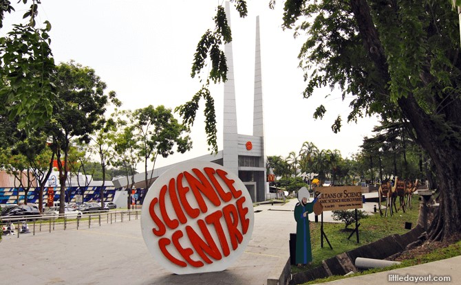
1 Science, Mathematics, and Technology
This week’s contents focuses on Singapore’s history with regards to its scientific and technolgical advancements.
1.1 Singapore’s Past
“A nation which depends upon others for its new basic scientific knowledge will be slow in its industrial progress and weak in its competitive position in world trade, regardless of its mechanical skill.”
– Bush, 1945
When Singapore separated from Malaysia, its focus was put on survival as it was a nation with no natural resources. One such tool that would enable Singapore to survive was through Science: a necessary pre-requisite for industrial and technological advancement.
In February 1966, Deputy Prime Minister Toh Chin Chye1 announced a proposal for forming a new statutory board: the Science Council of Singapore.
1.1.1 Science Council of Singapore (i.e., SCS)
This board was established in 1967 - the board would make reports and suggest recommendations on:
- Scientific and technological research and developments.
- Effective training and utilization of scientific and technological manpower in Singapore.
- Establishing official relations with other scientific organizations.
In 1968, the board suggested establishing a science center in Singapore - this was suggested to the Minister of Science and Technology.
Shortly after, a special committee was appointed to come up with the preparatory work and submit proposals for setting up the center - this committee included:
- A chairman: Ronald Sng Ewe Min
- Three members:
- Sng Yew Chong
- Rex Anthony Shelley
- Bernard Tan Tiong Gie
1.1.1.1 Science and Industry Quiz (i.e., SIQ)
The SCS thought that one way to popularize science and technology over the television would be to combine education with entertainment.
Secondary school students would form teams and participate in the SIQ. Each team would have four members: two members would participate in the quiz programme and the other two on standby.
There are two rounds to the SIQ:
Preliminary Round
All competing teams had two sets of question papers: Set A and Set B.
Set A had 100 questions; Set B had 50 questions. Each team had 15 minutes to answer both sets.
The first preliminary round was held at the Raffles Institution Hall on 28 July, 1972. 54 Teams competed, but only 12 were selected for the Televised Series.
Televised Series
There were three stages - the four Quarter Finals, two Semi-Finals, and a Final.
Each of the televised series had four rounds. The first round was where each team would have a fixed amount of time to answer as many questions as they could.
The second round consisted of questions being asked to each individual of a team. The question had to be answered within a minute and with no assistance.
Round three posed a question to all team members - the team had to answer the question unanimously. The six questions posed in this round enabled problem-solving and teamwork skills.
The fourth final round was a buzzer-style question triva session.
1.1.1.2 The Innovators
In 1979, the SIQ was replaced by The Innovators.
The Innovators was a series of six programs where JC2 students would work with Radio Television Singapura producers to produce television programs that had a scientific or technological theme, but focused on innovation.
The top three programs included:
- “…And Life Goes On”
- “Food Encounters”
- “The Miracle Gene”
These three programs were selected by a panel of judges - the student producers were awarded prizes too.
1.1.1.3 Opening of the Science Center
“While formal educational institutions make sure we are raising a nation of “science literate people”, Science Centre Singapore takes this to the next level.
We make science accessible and engaging, creating an environment where Singaporeans are empowered to advance their own learning and, hopefully, are inspired to do something incredible with their futures.
Admission (just to the Science Centre) is $6 for adults and $4 for children.”
– Science Center’s justification
The Science Center aimed to be a place where “Science befriends and transforms the minds of millions”.
It also aimed to promote interest, learning, and creativity in science and technology via imaginative and enjoyable experiences (that contribute to Singapore’s human resources).
1.1.1.3.1 Redeveloping the Science Center
“Many people whom I have spoken to remember the Science Center fondly, and can even name specific exhibits that have inspired them. The new Science Centre gives us an opportunity to do even more – to help our young learn through play and fun, to inculcate a love and wonder for science and technology among Singaporeans and to kindle a passion for lifelong learning and inquiry.”
– Mr. Koh
The above was mentioned by Koh Boon Hwee during 12 November, 2014.
1.1.2 National Science and Technology Board (i.e., NSTB)
This was formed in October 1990 (after the passing of the bill); and the enactment of the Science and Technology Board act the following month.
The NSTB was a statutory board under the Ministry of Trade & Industry (i.e., MTI).
The NSTB developed Singapore into a center of excellence in certain fields of science and technology to enhance national competitiveness in industrial and service sectors (i.e., industry-driven research and development).
1.1.2.1 A*STAR
On 5 January 2002, the NSTB was reorganized and renamed to the Agency for Science, Technology and Research (i.e., A*STAR).
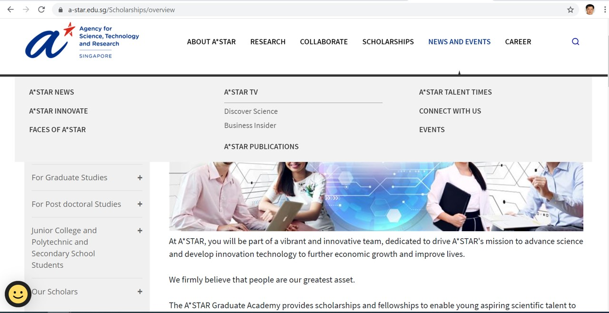
A*STAR aimed to promote mission-oriented research that advances scientific discovery and technological innovations.
The agency got a portion of the national science and technology’s budget as a show of support. Its facilities are currently located at Biopolis and Fusionopolis (at one-north).
1.1.2.1.1 A*STAR’s Mission
A*STAR aims to develop Singapore’s science, technology, and engineering capabilities to boost Singapore’s economic growth via the three ways:
- Developing the manpower required for the science and technology sectors.
- Pioneering research and development to drive innovation and enhance the Singapore’s knowledge-based economy.
- Monetizing results in research and development.
Regarding the final point, A*STAR’s commercialization arm manages its intellectual property and also helps apply its research to industry.
1.1.3 Lee Kong Chian Natural History Museum (i.e., LKCNHM)
The LKCNHM - formerly known as the Raffles Museum of Biodiversity Research (i.e., RMBR) - was opened on 18 April, 2015 by Dr. Tony Tan Keng Yun: the president and chancellor of the National University of Singapore.
The museum strives to be a leader in Southeast Asian biodiversity in research, education, and outreach.
Mrs. Della Lee3 donated enough money to enable LKCNHM to purchase three dinosaur skeletons.
1.1.4 NUS High School of Mathematics and Science
The school’s mission was to shape the future of education in mathematics and science by producing future-ready pioneers, humanitarians, and innovators for the world.
The school’s motto is: Experiment. Explore. Excel.
1.1.5 Singapore National Academy of Sciences (i.e., SNAS)
In 31 July, 1967, scientists collectively formed the SNAS - a scholarly and professional body. The SNAS was meant to become the equivalent of the UK’s Royal Society or the USA’s National Academy of Sciences.
The SNAS was formed with the following objectives:
- Promoting the advancement of science and technology in Singapore
- Discussing scientific, technological, and macroeconomic problems (especially those that concern the nation)
- Representing members’ scientific opinions and fellows of the academy
1.2 Singapore’s Return on Investment
This sub-section discusses some of Singapore’s results with regards to its investment in science and technology.
1.2.1 Trends in International Mathematics and Science Study (i.e., TIMSS)
The TIMSS is developed and executed at the international level by the International Association for the Evaluation of Education Assessment (i.e., IEA).
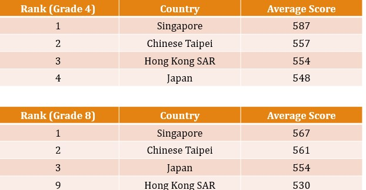
The TIMSS happens once every four years (the latest one was in 2019) - Singapore has partook in every study.
1.2.1.1 Scope of the TIMSS
The TIMSS gauges the mathematics and science knowledge of fourth and eighth graders (i.e., primary four and secondary 2 respectively). However, some countries only participate at the eighth-grade level.
The TIMSS allows for an international benchmark in three bands and along two dimensions - content and cognitive domains:
- Average is higher than the US’
- Average score is not measurably different from the US’
- Average score is lower than the US’
Results may wildly differ between countries, but the reasons are attributed to students’ attitudes, educational aspirations, school climates (e.g., violence in schools), school resources, and safety.
1.2.2 Programme for International Student Assessment (e.g., PISA)
The PISA is a study done once every three years and is run by the Organization for the Economic Cooperation and Development (i.e., OECD).
Singapore’s 15-year olds were ranked first in mathematics, science, and reading in 2015 (i.e., Singaporean students were the best in the world when it comes to working in teams to solve problems).
Hence, Singaporean students are very well equipped for the future’s opportunities and challenges - they have a high ability to work well independently and together.
In 2018, Singapore came in second place in all three categories (China took first place).
1.2.3 Times Higher Education (i.e., THE) University Rankings
In 2019, NTU and NUS were ranked 51 and 23 on the THE world university rankings.
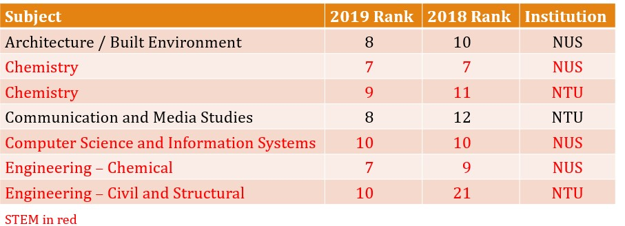
The Quacquarelli Symonds (i.e., QS) rankings ranked NTU and NUS at 12 and 11 respectively - SMU was ranked at 500. Both NTU and NUS were ranked at 11 in the QS rankings in 2020 - SMU was at 477.
1.2.4 President’s Science and Technology Award (i.e., PSTA)
The PSTA recognizes individuals with creative ideas who have made significant contributions to Singapore.
So far, over 60 men and women who have been singled out for this.
1.2.5 International Olympiads
This following sub sub-section lists Singapore’s performances in the International Olympiads:
Math
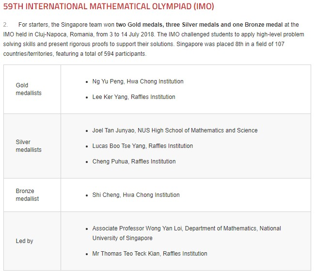
Singapore’s Performance in the International Math Olympiad (i.e., IMO) The first math olympiad (i.e., IMO) was held in 1959 in Romania with 7 countries’ participants. Over the years, 100 counries from five continents have participated.
The competition is overseen by the IMO board - they also ensure that each host country upholds the traditions of the IMO.
Informatics
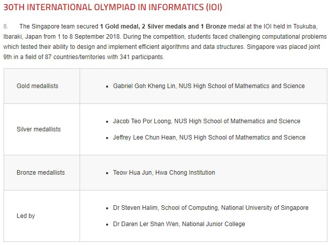
Singapore’s Performance in the International Olympiads in Informatics (i.e, IOI) The IOI is an annual competitive programming competition for secondary school students - the first IOI happened in 1989 in Pravetz, Bulgaria.
The contest consists of two days of computer programming and problem-solving in algorithms.
Biology
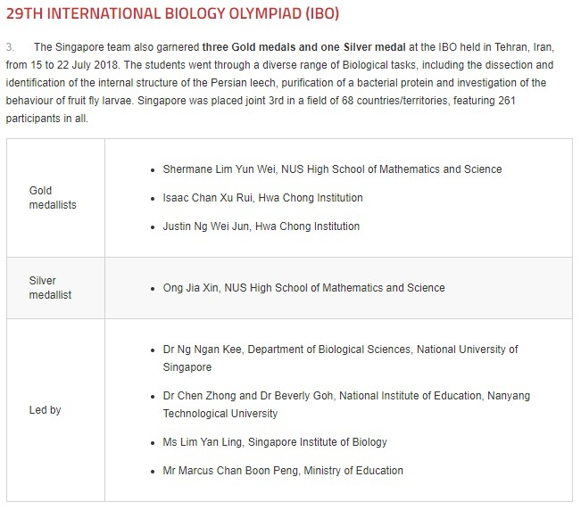
Singapore’s Performance in the International Biology Olympiad (i.e., IBO) The IBO is a competition that tackles Biological problems and deals with Biological experiments (i.e., testing them). The IBO challenges and stimulates participants to expand their talents and to promote participants’ careers as scientists.
Chemistry
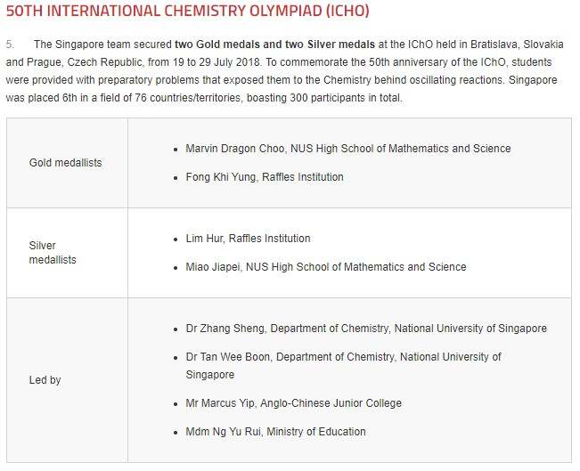
Singapore’s Performance in the 30th International Chemistry Olympiad (i.e., IChO) The IChO is an annual Chemistry for a nation’s most talented high-schoolers. Nations send a team of four students who are tested on their Chemistry knowledge and skills in a five-hour laboratory practical and five-hour written theoretical examination that are both held on different days.
Young Physicists’ Tournament
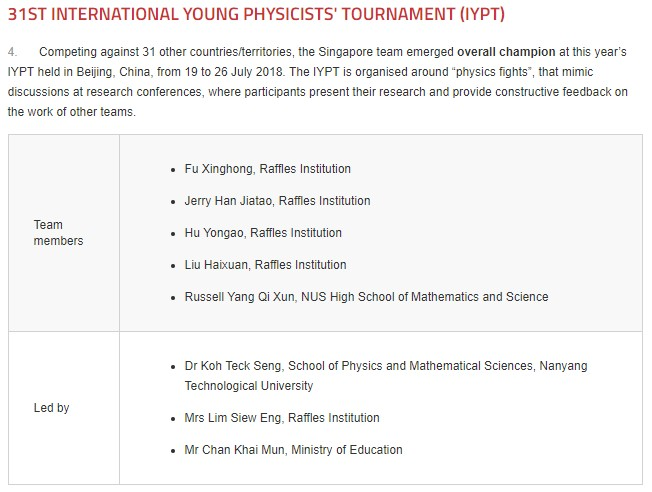
Singapore’s Performance in the International Young Physicists’ Tournament (i.e., IYPT) The IYPT (sometimes called the “Physics World Cup”) is a team-oriented competition for secondary school students.
Participants present their solutions to scientific problems they have prepared over several months and then discuss their solutions with other teams.
Astronomy and Astrophysics (i.e., IOAA)
The IOAA promotes interest in astronomy and similar subjects by developing “international contacts” between different schools to promote Astronomy and Astrophysics in schools.
1.2.6 Singapore’s Scientific Pioneers

The book shown above contains information on 25 individuals who laid foundations for Singapore’s scientific achievements.
All of these scientists were born prior to Singapore’s independence, but have made exceptional contributions to Singapore’s engineering, medical, educational, and scientific sectors.
Some of these people include:
Benjamin Henry Sheares
He was the father of Obstetrics and Gynaecology in Singapore. He has a procedure named after him and was one of the top graduates of the King Edward VII College of Medicine.
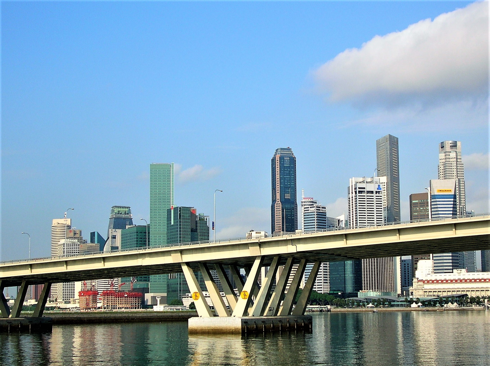
The Shears Bridge in Singapore He was also Singapore’s second president - he also has a bridge named after him: the Benjamin Sheares Bridge (which is one of Singapore’s most famous landmarks).
Shih Choong Fong
Shih was the president of NUS from 2000 to 2008 and also the founding president for King Abdullah University of Science and Technology (i.e., KAUST) in from 2008 to 2013.
Shih got a PhD from Harvard in 1973 and led the Fracture Research Group at the GE Corporate Research Lab in the US. In 1981, he joined Brown University. He was appointed University Professor by NUS in 2013 and was inducted into the Honorary Membership by NUSS in 2001.
Tay Eng Soon
Soon was more well-known as a politician. He was a minister of state in the Ministry of Education from 1980 until he died in 1993.
Soon worked hard to develop polytechnics and ITEs.
His speciality was in nuclear energy and nuclear power.
1.3 What is Science?
“Science is a voyage of intellectual exploration, and an expression of the human spirit.”
– Henry Stommel, 1989
In 1834, William Whewell4 (1794 - 1866) coined the term “scientist”5.
He was also the master of of Trinity College at Cambridge; he was also a founding member and a president of the British Association for the Advancement of Science.
1.3.1 Scientific Worldview
The world is seen as such by a scientist:
- The world is understandable
- Scientific ideas can change
- Scientific knowledge is everlasting
- Science cannot answer everything
- Science is an enterprise
Science is a blend of logic and imagination - logic is used to understand why things happen while one’s creativity is used to recognize the meaning of something unexpected.
1.3.1.1 The World is Understandable
Stuff that happens in this world have a consistent pattern that can be seen through close observation.
By using one’s intellect along with instruments, people can find all sorts of patterns.
The universe is a system where the basic rules are the same.
1.3.1.2 Scientific Ideas can Change
New observations can challenge existing theories, in which case, new theories may be needed to explain the observation.
Science is humanity’s attempt at explaining how the universe works.
Testing, improving, and discarding theories is an ongoing process in Science.
1.3.1.3 Scientific Knowledge is Everlasting
Modifying ideas (instead of rejecting them) is a norm in science. Powerful constructs survive and grow more precise so that they are more widely accepted.
Einstein did not reject the Newtonian law of motion, but only showed them to be a limited application with a more general concept.
1.3.1.4 Science Cannot Answer Everything
Many beliefs fall into this category (e.g., supernatural forces, true purpose of life, etc).
In some cases, science may even be seen as irrelevant by people hwo have certain beliefs (e.g., fortune tellers)
1.3.1.5 Science is an Enterprise
Science is a complex, social activity that involves many individuals of many backgrounds.
Scientific research is also competitive in that researchers compete for funding - committees meet up to decide which topic(s) should be focused on.
1.3.2 Components of Science
Science has certain elements:
1.3.2.1 Scientific Enquiry
Science demands evidence; scientists focus on collecting accurate data (which are verified by others).
1.3.2.2 Making Observations
To make observations, scientists must use:
- Their five senses
- Instruments that enhance those senses
- Instruments that go beyond the human senses
1.3.2.3 Attitudes
Scientists need to be willing to work hard, to have courage, and to embrace openness (i.e., be willing to change).
1.3.3 Ways of Observation
Scientists…
- Observe passively (i.e., watch things happen without interefering)
- Make collections (i.e., collecting samples)
- Actively probe the world (e.g., conducting clinical trials, etc).
Otherwise, they also…
Explain and Predict
Scientists use observations to construct explanations for them.
These hypotheses should also fit additional observations.
Identify and Avoid Bias
Scientific evidence can be biased in how scientists choose to report those facts (or the kind of data collected to begin with).
A scientist’s nationality, sex, age, and other factors may cause them to look for one kind of evidence or interpretation.
A possible safeguard against this is to have many different people involved working on the same problem.
Realize that nobody is omniscient (i.e., all-knowing)
No scientist had the right to decide for themselves what is “true”.
Scientist whose observations do not align with mainstream ideas may encounter vigorous criticisms - these scientists may also have difficulty garnering support for their research.
1.3.4 Creative-Failure Methodology
“A basic truth that the history of the creation of the transistor reveals is that the foundations of transistor electronics were created by making errors and following hunches that failed to give what was expected.”
– William Shockley
William Shockley - inventor of the transistor - started with a concept of the tubeless radio and used trial and error to make his invention.
1.3.5 Communication and Organization in Science
Science can be communicated in a variety of ways, some of which include:
Communicating with the Public
Science is too important for the public to stay in the lab.
Many scientists too feel a need to inform the public about potentially dangerous misconceptions or to counter misinformation from numerous quarters.
Science is also organized into content disciplines - it is a collection of scientific fields (that provide a foundation of research).
Different fields in science also spill into one another (e.g., Biochemistry, Biophysics, etc).
1.3.6 A “Right” Way to Perform Science
There are ethical principles to conducting science - competition has led to unethical practices such as:
Scientists withholding information and falsifying findings
These violations damage science, the scientific community, and the funding agencies.
Treating live subjects
For instance, human subjects should only be used for a study if they consent to it. Part of this also means disclosing the risks and intended benefits of research.
Scientists as Experts and Advisors
Scientists partake in public affairs as specialists and as citizens.
Scientists help the public and its representatives to help understand what most likely happened.
1.3.7 Why is Science so Important?
Science is so important (and specialised) that the President of the United States has a 25-member panel, known as the “National Science Board” to serve as advisors to him and the Congress on policy matters related to science and engineering, and education in both fields.
The National Science Board has its members drawn from industry and academia. Vannevar Bush was the first Presidential Science Advisor, and also head of the Office of Scientific Research and Development (OSRD). He oversaw most of America’s scientific research during World War II.
1.3.8 Science in Courtrooms
An increasing number of legal disputes involve the principles and tools of science. Properly resolving those disputes matters not just to the litigants, but also to the general public – those who live in our technologically complex society and whom the law must serve.
The decisions of the judges should reflect a proper scientific and technical understanding so that the law can respond to the needs of the public
1.4 Mathematics and Science
Mathematics is the science of patterns and relationships For some, especially professional mathematicians, the essence of mathematics lies in its beauty and its intellectual challenge these people talk about “elegant” solutions to mathematical problems
For scientists and engineers, the value of mathematics lie in its ability to solve problems that originate in the world of experience
Mathematics also find application in “non-technical”, fields, e.g., business, music, politics, sports, and social sciences
1.5 Technology
Technology extends our abilities to change the world: to cut, shape, or put together materials; to reach farther with our hands, voices, and senses.
We use technology to try to change the world to suite us better The changes may relate to survival needs such as food, shelter, or defense, or they may relate to human aspirations such as knowledge, art, or control.
But the results of changing the world are often complicated and unpredictable.
They can include unexpected benefits, costs, or risks.
1.5.1 Is it Practical?
Engineering combines scientific enquiry and practical values In its broadest sense, engineering consists of construing a problem and designing a solution for it.
Engineering shares many characteristics with science, but engineering affects the social system and culture more directly than scientific research.
1.5.1.1 There is No Perfect Design
There is no perfect design as accommodating one constraint leads to conflict with another.
All technologies involve control, e.g., in an iron (or an air-conditioned room, or a rice cooker), the temperature is controlled within a preset range.
Control typically requires feedback, logical comparisons, and a means for activating change
1.5.1.2 Side Effects
Technologies have side effects what is one side effect of X-ray? personal computers? mobile phones? the Internet? photocopy machines? the automobile? social media?
Systematic risk analysis is used to minimise the impact of side effects (e.g., the side effect of X-ray is cancer)
There may also be unintended benefits / consequences:
Suntan lotion
The main ingredient, titanium dioxide, mixed with water, results in hydrogen peroxide. This kills phytoplankton that nourishes fish and ultimately poisons the rest of the food chain.
Technology can also fail too (e.g., crashing of the space shuttle).
1.5.2 Issues in Technology
Issues have also emerged overuse of fossil fuels, pollution, global warming, new bacterial strains that are resistant to antibiotics, digital divide, deforestation, extinction of plants and animals, strain on the soil and water systems, and more.
1.5.2.1 Pseudoscience
In prescientific times, any attempt to harness nature mean forcing nature against her will, Nature had to be subjugated, usually with some form of magic, or by means that were “above” nature – that is, supernatural.
Science does the exact opposite, it works “within” nature’s laws. The methods of science have largely displaced reliance on the supernatural.
The old ways persist, full force in primitive cultures, and they survive in technologically advanced societies too, usually disguised as science.
1.5.2.1.1 No Science! Column
In his book, Flim-Flam!, James Randi reported that more than 20,000 practising astrologers in the United States serve millions of credulous believers.
Science writer Martin Gardner reports that a greater percentage of Americans today believe in astrology and occult phenomena than did citizens of medieval Europe.
Few newspapers print a daily science column, but nearly all provide daily horoscopes.
1.5.2.2 Science Denialism
Denialism refers to “the employment of rhetorical arguments to give the appearance of legitimate debate where there is none, an approach that has the ultimate goal of rejecting a proposition on which a scientific consensus exists”.
– CS5027 Course Material
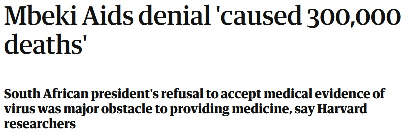
Thabo Mbeki’s (the second president of South Africa) denial of science has led to the deaths of many people.
He was a Physiologist and a Vice Chancellor of the University of Singapore.↩︎
JC is short for Junior College!↩︎
She was Lee Seng Gee’s - the Lee Foundation’s chairman - wife.↩︎
He was a philosopher of science and a Cambridge University historian↩︎
Prior to this term, scientists were known as “men of science” or “natural philosophers”↩︎